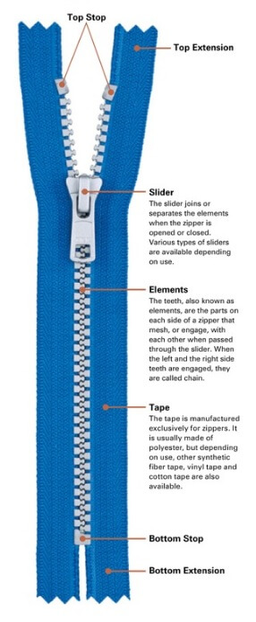

Zipper Types

Zippers come in many sizes and styles for various apparel and bag making applications.
For zipper pouches and backpacks, nylon coil zippers offer a perfect balance of durability, weight, and cost.
Compared to "Vislon" (plastic molded tooth) zippers, coil zippers work well along curves, are more durable, and are more easily assembled.
For the vast majority of MYOG projects and patterns, closed-end zippers are used.
One can purchase pre-assembled zippers at specific lengths, trim to fit, and/or assemble from continuous zipper tape and zipper sliders.
Continuous zipper tape is ordered in bulk lengths, cut to size with scissors, and assembled at home with compatible sliders.
Water resistant zippers are now commonplace, however are significantly more expensive, require more force to open and close, and the polyurethane (PU) coating is subject to UV damage.
PU-coated zipper tape, such as YKK Uretek, often has a shiny side which will be visible and the zipper teeth are hidden on the inside of the pocket.
In my experience, at least for horizontal zippers, a zipper placket (aka flap) is lighter weight and much lower cost.
📢 Zipper sliders are specific to the brand and type of zipper tape, so be sure to select compatible parts.
Sliders also come in non-locking and automatically locking styles.
Locking zippers are less likely to self open when installed vertically, e.g. on a jacket.
Non-locking sliders are common if bought standalone and are best if you're planning to add unique pull lanyards.